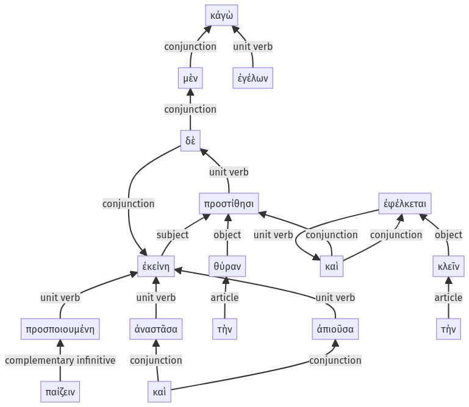

Lysias, Oration 1, 1.12.57-1.13.14a
1.12.51-1.12.56a | 1.13.15-1.13.25a
Sentence 29
1.12.57-1.13.14a
κἀγὼ μὲν ἐγέλων, ἐκείνη δὲ ἀναστᾶσα καὶ ἀπιοῦσα προστίθησι τὴν θύραν, προσποιουμένη παίζειν, καὶ τὴν κλεῖν ἐφέλκεται.
1 μὲν ἐγέλων
1 ἐκείνη δὲ
2 ἀναστᾶσα
2 καὶ ἀπιοῦσα
1 προστίθησι τὴν θύραν
2 προσποιουμένη παίζειν
1 καὶ τὴν κλεῖν ἐφέλκεται
κἀγὼ μὲν ἐγέλων, ἐκείνη δὲ ἀναστᾶσα καὶ ἀπιοῦσα προστίθησι τὴν θύραν, προσποιουμένη παίζειν, καὶ τὴν κλεῖν ἐφέλκεται.
Highlighting:
- connecting words
- unit verb
- subject
- object
Color code:
- Independent clause (level 1, intransitive verb)
- Independent clause (level 1, transitive verb)
- circumstantial participle (level 2, intransitive verb)
- circumstantial participle (level 2, intransitive verb)
- circumstantial participle (level 2, intransitive verb)
- independent clause (level 1, transitive verb)
